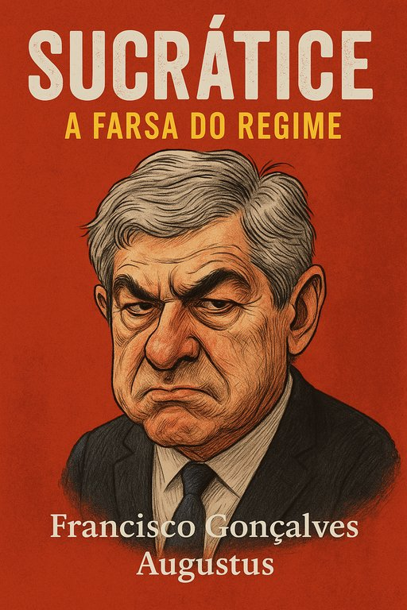

Publicado em 2025-06-08 21:23:20
Publicado a 8 de Junho de 2025 por Augustus Veritas
“Toda a semelhança com a realidade é pura... coincidência? Ou seria reincidência?”
Chegou o livro que faltava no cenário da comédia trágica portuguesa. "A Grande Sucratice Nacional" é uma obra satírica e provocadora que lança luz – e sarcasmo – sobre um dos maiores enredos político-judiciais da história recente de Portugal.
🎭 Com capítulos vibrantes, personagens fictícias de nomes suspeitamente familiares, e um enredo que transpira ironia e crítica social, o livro percorre os meandros de um país onde o teatro da justiça se cruza com os bastidores da corrupção, da impunidade e da memória seletiva dos poderosos.
📘 Sobre o livro: Esta não é uma narrativa sobre um homem, mas sobre um sistema. Não é apenas sobre corrupção, mas sobre a cultura que a protege. E sobretudo, não é um romance – é um espelho deformante de um país que aprendeu a rir para não chorar.
🖋 Dos autores:
Um excerto para abrir o apetite (ou o incómodo):
🔹 📘 PDF Version 🔹 📗 EPUB Version 🔹 📄 Online Version
“Na Sucrátice não se prende quem rouba — prende-se quem ousa dizer que o roubo existe.”
“E ali estava ele, o Sucrátice, a prestar declarações como quem oferece teatro a uma plateia já cansada de encenações. Os juízes dormem, os jornalistas anotam, o povo esquece. Mas a Sucratice... essa sobrevive a tudo.”
Porque rir é resistência.
Porque escrever é revolta.
E porque há verdades que só a sátira consegue dizer.
Artigo de Augustus Veritas Lumen
Imagem cortesia de OpenAI (c)
"Era uma vez um país tão dócil, que até os corruptos se sentavam à mesa do poder com guardanapo ao pescoço e ar de inocência. O personagem central, de verbo derramado e vaidade crónica, proclamava-se vítima de conspirações invisíveis, enquanto o ouro desaparecia pelos corredores do regime. A Justiça, coitada, tropeçava nos próprios códigos e quedava-se em debates infinitos sobre prazos, prescrições e amnésias seletivas. Mas o povo… ah, o povo! Esse ainda acreditava que os processos chegariam a bom porto — talvez por navio-fantasma."